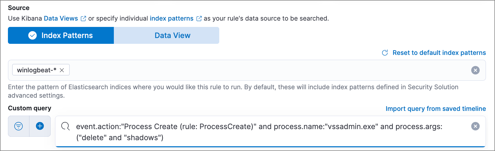
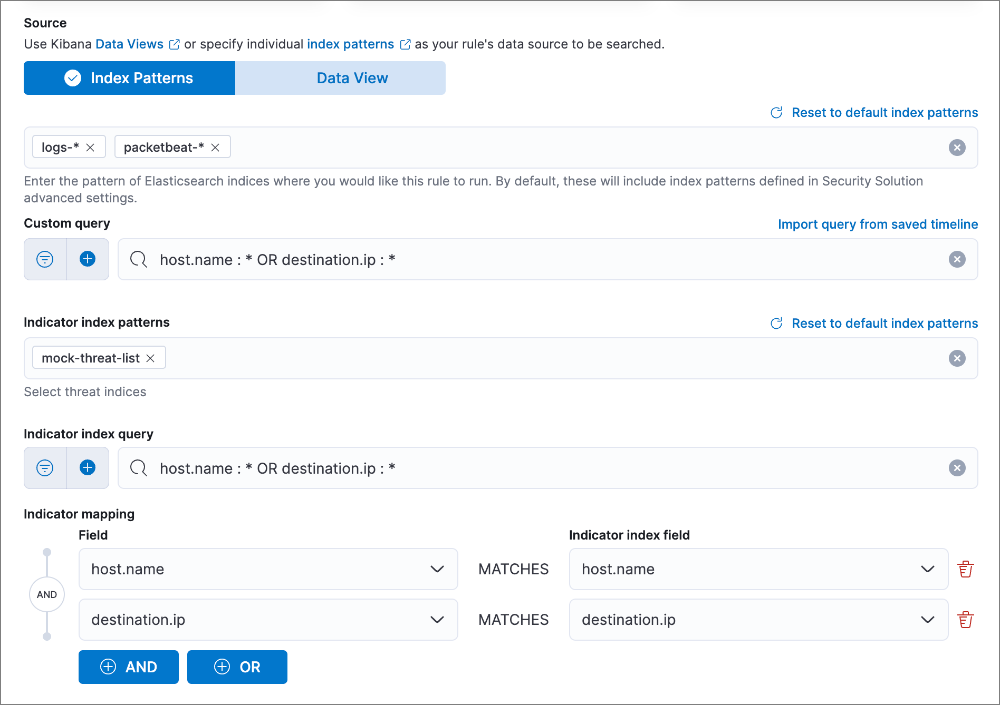
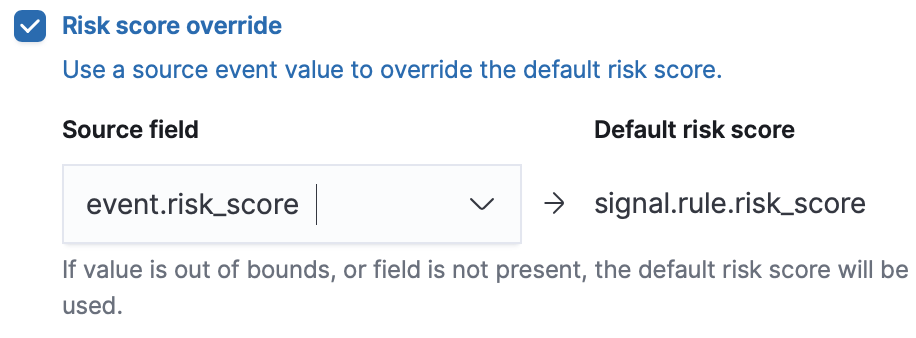
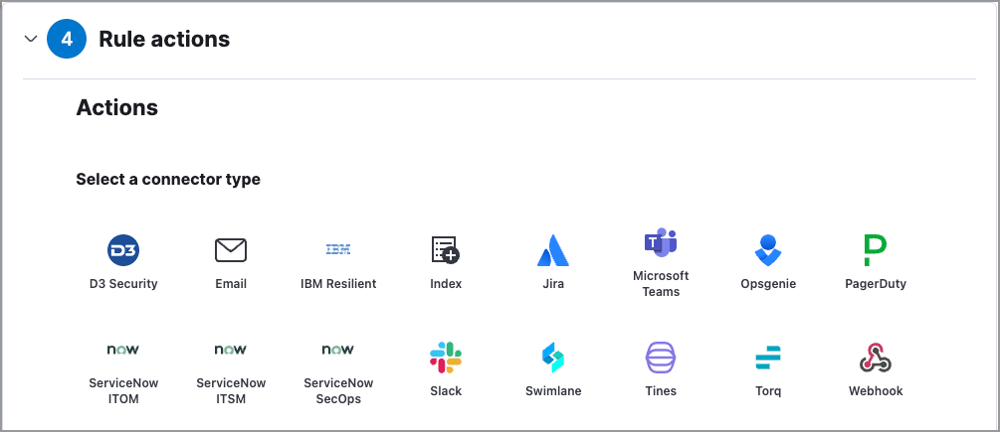
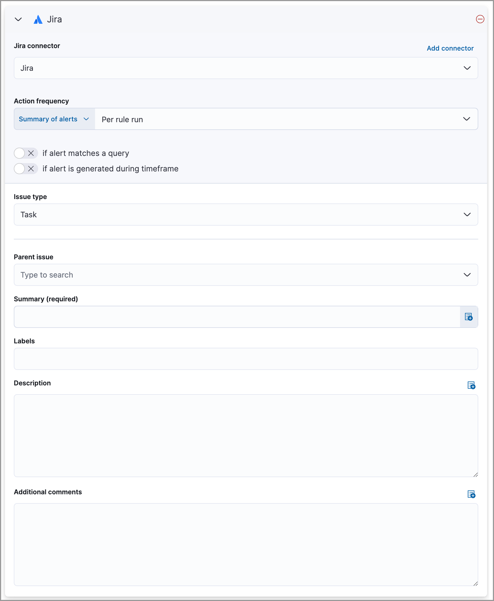
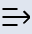

Create a detection ruleedit
To create a new detection rule, follow these steps:
- Define the rule type. The configuration for this step varies depending on the rule type.
- Configure basic rule settings.
- Configure advanced rule settings (optional).
- Set the rule’s schedule.
- Set up alert notifications (optional).
- Set up response actions (optional).
At any step, you can preview the rule before saving it to see what kind of results you can expect.
Additional configuration is required for detection rules using cross-cluster search. Refer to Cross-cluster search and detection rules.
Create a machine learning ruleedit
To create or edit machine learning rules, you must have the appropriate license or use a
cloud deployment. Additionally, you must have the machine_learning_admin user
role, and the selected machine learning job must be running for the rule to function correctly.
- Go to Rules → Detection rules (SIEM) → Create new rule. The Create new rule page displays.
-
To create a rule based on a machine learning anomaly threshold, select Machine Learning, then select:
-
The required machine learning jobs.
If a required job isn’t currently running, it will automatically start when you finish configuring and enable the rule.
- The anomaly score threshold above which alerts are created.
-
- Click Continue to configure basic rule settings.
Create a custom query ruleedit
- Go to Rules → Detection rules (SIEM) → Create new rule. The Create new rule page displays.
-
To create a rule based on a KQL or Lucene query, select Custom query, then:
- Define which Elasticsearch indices or data view the rule searches for alerts.
-
Use the filter and query fields to create the criteria used for detecting alerts.
The following example (based on the prebuilt rule Volume Shadow Copy Deleted or Resized via VssAdmin) detects when the
vssadmin delete shadowsWindows command is executed:-
Index patterns:
winlogbeat-*Winlogbeat ships Windows event logs to Elastic Security.
-
Custom query:
event.action:"Process Create (rule: ProcessCreate)" and process.name:"vssadmin.exe" and process.args:("delete" and "shadows")Searches the
winlogbeat-*indices forvssadmin.exeexecutions with thedeleteandshadowarguments, which are used to delete a volume’s shadow copies.
-
-
You can use Kibana saved queries (
 ) and queries from saved Timelines (Import query from saved Timeline) as rule conditions.
) and queries from saved Timelines (Import query from saved Timeline) as rule conditions.When you use a saved query, the Load saved query "query name" dynamically on each rule execution check box appears:
- Select this to use the saved query every time the rule runs. This links the rule to the saved query, and you won’t be able to modify the rule’s Custom query field or filters because the rule will only use settings from the saved query. To make changes, modify the saved query itself.
- Deselect this to load the saved query as a one-time way of populating the rule’s Custom query field and filters. This copies the settings from the saved query to the rule, so you can then further adjust the rule’s query and filters as needed. If the saved query is later changed, the rule will not inherit those changes.
- (Optional, Platinum or higher subscription required) Use Suppress alerts by to reduce the number of repeated or duplicate alerts created by the rule. Refer to Suppress detection alerts for more information.
- Click Continue to configure basic rule settings.
Create a threshold ruleedit
- Go to Rules → Detection rules (SIEM) → Create new rule. The Create new rule page displays.
-
To create a rule based on a source event field threshold, select Threshold, then:
- Define which Elasticsearch indices the rule analyzes for alerts.
-
Use the filter and query fields to create the criteria used for detecting alerts.
You can use Kibana saved queries (
) and queries from saved Timelines (Import query from saved Timeline) as rule conditions. -
Use the Group by and Threshold fields to determine which source event field is used as a threshold and the threshold’s value.
Nested fields are not supported for use with Group by.
-
Use the Count field to limit alerts by cardinality of a certain field.
For example, if Group by is
source.ip, destination.ipand its Threshold is10, an alert is generated for every pair of source and destination IP addresses that appear in at least 10 of the rule’s search results.You can also leave the Group by field undefined. The rule then creates an alert when the number of search results is equal to or greater than the threshold value. If you set Count to limit the results by
process.name>= 2, an alert will only be generated for source/destination IP pairs that appear with at least 2 unique process names across all events.Alerts created by threshold rules are synthetic alerts that do not resemble the source documents. The alert itself only contains data about the fields that were aggregated over (the Group by fields). Other fields are omitted, because they can vary across all source documents that were counted toward the threshold. Additionally, you can reference the actual count of documents that exceeded the threshold from the
kibana.alert.threshold_result.countfield.
- [preview] This functionality is in technical preview and may be changed or removed in a future release. Elastic will work to fix any issues, but features in technical preview are not subject to the support SLA of official GA features. (Optional, Platinum or higher subscription required) Select Suppress alerts to reduce the number of repeated or duplicate alerts created by the rule. Refer to Suppress detection alerts for more information.
- Click Continue to configure basic rule settings.
Create an event correlation ruleedit
- Go to Rules → Detection rules (SIEM) → Create new rule. The Create new rule page displays.
-
To create an event correlation rule using EQL, select Event Correlation, then:
- Define which Elasticsearch indices or data view the rule searches when querying for events.
-
Write an EQL query that searches for matching events or a series of matching events.
To find events that are missing in a sequence, use the missing events syntax.
For example, the following rule detects when
msxsl.exemakes an outbound network connection:-
Index patterns:
winlogbeat-*Winlogbeat ships Windows events to Elastic Security.
-
EQL query:
sequence by process.entity_id [process where event.type in ("start", "process_started") and process.name == "msxsl.exe"] [network where event.type == "connection" and process.name == "msxsl.exe" and network.direction == "outgoing"]Searches the
winlogbeat-*indices for sequences of amsxsl.exeprocess start event followed by an outbound network connection event that was started by themsxsl.exeprocess.
For sequence events, the Elastic Security app generates a single alert when all events listed in the sequence are detected. To see the matched sequence events in more detail, you can view the alert in the Timeline, and, if all events came from the same process, open the alert in Analyze Event view.
-
-
(Optional) Click the EQL settings icon () to configure additional fields used by EQL search:
-
Event category field: Contains the event classification, such as
process,file, ornetwork. This field is typically mapped as a field type in the keyword family. Defaults to theevent.categoryECS field. - Tiebreaker field: Sets a secondary field for sorting events (in ascending, lexicographic order) if they have the same timestamp.
-
Timestamp field: Contains the event timestamp used for sorting a sequence of events. This is different from the Timestamp override advanced setting, which is used for querying events within a range. Defaults to the
@timestampECS field.
-
Event category field: Contains the event classification, such as
- [preview] This functionality is in technical preview and may be changed or removed in a future release. Elastic will work to fix any issues, but features in technical preview are not subject to the support SLA of official GA features. (Optional, Platinum or higher subscription required) Use Suppress alerts by to reduce the number of repeated or duplicate alerts created by the rule. Refer to Suppress detection alerts for more information.
- Click Continue to configure basic rule settings.
Create an indicator match ruleedit
Elastic Security provides limited support for indicator match rules. See Limited support for indicator match rules for more information.
- Go to Rules → Detection rules (SIEM) → Create new rule. The Create new rule page displays.
-
To create a rule that searches for events whose specified field value matches the specified indicator field value in the indicator index patterns, select Indicator Match, then fill in the following fields:
- Source: The individual index patterns or data view that specifies what data to search.
-
Custom query: The query and filters used to retrieve the required results from the Elastic Security event indices. For example, if you want to match documents that only contain a
destination.ipaddress field, adddestination.ip : *.If you want the rule to check every field in the indices, use this wildcard expression:
*:*.You can use Kibana saved queries (
) and queries from saved Timelines (Import query from saved Timeline) as rule conditions. -
Indicator index patterns: The indicator index patterns containing field values for which you want to generate alerts. This field is automatically populated with indices specified in the
securitySolution:defaultThreatIndexadvanced setting. For more information, see Update default Elastic Security threat intelligence indices.Data in indicator indices must be ECS compatible, and so it must contain a
@timestampfield. -
Indicator index query: The query and filters used to filter the fields from
the indicator index patterns. The default query
@timestamp > "now-30d/d"searches specified indicator indices for indicators ingested during the past 30 days and rounds the start time down to the nearest day (resolves to UTC00:00:00). -
Indicator mapping: Compares the values of the specified event and indicator fields, and generates an alert if the values are identical.
Only single-value fields are supported.
To define which field values are compared from the indices add the following:
- Field: The field used for comparing values in the Elastic Security event indices.
- Indicator index field: The field used for comparing values in the indicator indices.
-
You can add
ANDandORclauses to define when alerts are generated.For example, to create a rule that generates alerts when
host.nameanddestination.ipfield values in thelogs-*orpacketbeat-*Elastic Security indices are identical to the corresponding field values in themock-threat-listindicator index, enter the rule parameters seen in the following image:Before you create rules, create Timeline templates so they can be selected here. When alerts generated by the rule are investigated in the Timeline, Timeline query values are replaced with their corresponding alert field values.
- [preview] This functionality is in technical preview and may be changed or removed in a future release. Elastic will work to fix any issues, but features in technical preview are not subject to the support SLA of official GA features. (Optional, Platinum or higher subscription required) Select Suppress alerts to reduce the number of repeated or duplicate alerts created by the rule. Refer to Suppress detection alerts for more information.
- Click Continue to configure basic rule settings.
Use value lists with indicator match rulesedit
While there are numerous ways you can add data into indicator indices, you can use value lists as the indicator match index in an indicator match rule. Take the following scenario, for example:
You uploaded a value list of known ransomware domains, and you want to be notified if any of those domains matches a value contained in a domain field in your security event index pattern.
- Upload a value list of indicators.
-
Create an indicator match rule and fill in the following fields:
- Index patterns: The Elastic Security event indices on which the rule runs.
-
Custom query: The query and filters used to retrieve the required results from the Elastic Security event indices (e.g.,
host.domain :*). -
Indicator index patterns: Value lists are stored in a hidden index called
.items-<Kibana space>. Enter the name of the Kibana space in which this rule will run in this field. -
Indicator index query: Enter the value
list_id :, followed by the name of the value list you want to use as your indicator index (uploaded in Step 1 above). -
Indicator mapping
- Field: Enter the field from the Elastic Security event indices to be used for comparing values.
-
Indicator index field: Enter the type of value list you created (i.e.,
keyword,text, orIP).If you don’t remember this information, go to Rules → Detection rules (SIEM) → Manage value lists. Locate the appropriate value list and note the field in the corresponding
Typecolumn. (Examples include keyword, text, and IP.)
Create a new terms ruleedit
- Go to Rules → Detection rules (SIEM) → Create new rule. The Create new rule page displays.
-
To create a rule that searches for each new term detected in source documents, select New Terms, then:
- Specify what data to search by entering individual Elasticsearch index patterns or selecting an existing data view.
-
Use the filter and query fields to create the criteria used for detecting alerts.
You can use Kibana saved queries (
) and queries from saved Timelines (Import query from saved Timeline) as rule conditions. -
Use the Fields menu to select a field to check for new terms. You can also select up to three fields to detect a combination of new terms (for example, a
host.ipandhost.idthat have never been observed together before).When checking multiple fields, each unique combination of values from those fields is evaluated separately. For example, a document with
host.name: ["host-1", "host-2", "host-3"]anduser.name: ["user-1", "user-2", "user-3"]has 9 (3x3) unique combinations ofhost.nameanduser.name. A document with 11 values inhost.nameand 10 values inuser.namehas 110 (11x10) unique combinations. The new terms rule only evaluates 100 unique combinations per document, so selecting fields with large arrays of values might cause incorrect results. -
Use the History Window Size menu to specify the time range to search in minutes, hours, or days to determine if a term is new. The history window size must be larger than the rule interval plus additional look-back time, because the rule will look for terms where the only time(s) the term appears within the history window is also within the rule interval and additional look-back time.
For example, if a rule has an interval of 5 minutes, no additional look-back time, and a history window size of 7 days, a term will be considered new only if the time it appears within the last 7 days is also within the last 5 minutes. Configure the rule interval and additional look-back time when you set the rule’s schedule.
- [preview] This functionality is in technical preview and may be changed or removed in a future release. Elastic will work to fix any issues, but features in technical preview are not subject to the support SLA of official GA features. (Optional, Platinum or higher subscription required) Use Suppress alerts by to reduce the number of repeated or duplicate alerts created by the rule. Refer to Suppress detection alerts for more information.
- Click Continue to configure basic rule settings.
Create an ES|QL ruleedit
Use ES|QL to query your source events and aggregate event data. Query results are returned in a table with rows and columns. Each row becomes an alert.
To create an ES|QL rule:
- Go to Rules → Detection rules (SIEM) → Create new rule. The Create new rule page appears.
-
Select ES|QL, then write a query.
Refer to the sections below to learn more about ES|QL query types, query design considerations, and rule limitations.
Click the help icon () to open the in-product reference documentation for all ES|QL commands and functions.
- Click Continue to configure basic rule settings.
ES|QL query typesedit
ES|QL rule queries are loosely categorized into two types: aggregating and non-aggregating.
Aggregating queryedit
Aggregating queries use STATS...BY functions to aggregate source event data. Alerts generated by a rule with an aggregating query only contain the fields that the ES|QL query returns and any new fields that the query creates.
A new field is a field that doesn’t exist in the query’s source index and is instead created when the rule runs. You can access new fields in the details of any alerts that are generated by the rule. For example, if you use the STATS...BY function to create a column with aggregated values, the column is created when the rule runs and is added as a new field to any alerts that are generated by the rule.
Here is an example aggregating query:
FROM logs-* | STATS host_count = COUNT(host.name) BY host.name | SORT host_count DESC | WHERE host_count > 20
-
This query starts by searching logs from indices that match the pattern
logs-*. -
The query then aggregates the count of events by
host.name. -
Next, it sorts the result by
host_countin descending order. -
Then, it filters for events where the
host_countfield appears more than 20 times during the specified rule interval.
Rules that use aggregating queries might create duplicate alerts. This can happen when events that occur in the additional look-back time are aggregated both in the current rule execution and in a previous rule execution.
Non-aggregating queryedit
Non-aggregating queries don’t use STATS...BY functions and don’t aggregate source event data. Alerts generated by a non-aggregating query contain source event fields that the query returns, new fields the query creates, and all other fields in the source event document.
A new field is a field that doesn’t exist in the query’s source index and is instead created when the rule runs. You can access new fields in the details of any alerts that are generated by the rule. For example, if you use the EVAL command to append new columns with calculated values, the columns are created when the rule runs, and are added as new fields to any alerts generated by the rule.
Here is an example non-aggregating query:
FROM logs-* METADATA _id, _index, _version | WHERE event.category == "process" AND event.id == "8a4f500d" | LIMIT 10
-
This query starts by querying logs from indices that match the pattern
logs-*. TheMETADATA _id, _index, _versionoperator allows alert deduplication. -
Next, the query filters events where the
event.categoryis a process and theevent.idis8a4f500d. - Then, it limits the output to the top 10 results.
Turn on alert deduplication for rules using non-aggregating queriesedit
To deduplicate alerts, a query needs access to the _id, _index, and _version metadata fields of the queried source event documents. You can allow this by adding the METADATA _id, _index, _version operator after the FROM source command, for example:
FROM logs-* METADATA _id, _index, _version | WHERE event.category == "process" AND event.id == "8a4f500d" | LIMIT 10
When those metadata fields are provided, unique alert IDs are created for each alert generated by the query.
When developing the query, make sure you don’t DROP or filter out the _id, _index, or _version metadata fields.
Here is an example of a query that fails to deduplicate alerts. It uses the DROP command to omit the _id property from the results table:
FROM logs-* METADATA _id, _index, _version | WHERE event.category == "process" AND event.id == "8a4f500d" | DROP _id | LIMIT 10
Here is another example of an invalid query that uses the KEEP command to only return event.* fields in the results table:
FROM logs-* METADATA _id, _index, _version | WHERE event.category == "process" AND event.id == "8a4f500d" | KEEP event.* | LIMIT 10
Query design considerationsedit
When writing your query, consider the following:
-
The
LIMITcommand specifies the maximum number of rows an ES|QL query returns and the maximum number of alerts created per rule execution. Similarly, a detection rule’smax_signalssetting specifies the maximum number of alerts it can create every time it runs.If the
LIMITvalue is lower than themax_signalsvalue, the rule uses theLIMITvalue to determine the maximum number of alerts the rule generates. If theLIMITvalue is higher than themax_signalsvalue, the rule uses themax_signalsvalue.The
max_signalsdefault value is 100. You can modify it using the Create rule API. -
When writing an aggregating query, use the
STATS...BYcommand with fields that you want to search and filter for after alerts are created. For example, using thehost.name,user.name,process.namefields with theBYoperator of theSTATS...BYcommand returns these fields in alert documents, and allows you to search and filter for them from the Alerts table.
ES|QL rule limitationsedit
If your ES|QL query creates new fields that aren’t part of the ECS schema, they aren’t mapped to the alerts index so you can’t search for or filter them in the Alerts table. As a workaround, create runtime fields.
Highlight fields returned by the ES|QL rule queryedit
When configuring an ES|QL rule’s Custom highlighted fields, you can specify any fields that the rule’s aggregating or non-aggregating query return. This can help ensure that returned fields are visible in the alert details flyout while you’re investigating alerts.
Configure basic rule settingsedit
-
In the About rule pane, fill in the following fields:
- Name: The rule’s name.
- Description: A description of what the rule does.
-
Default severity: Select the severity level of alerts created by the rule:
- Low: Alerts that are of interest but generally are not considered to be security incidents. Sometimes a combination of low severity alerts can indicate suspicious activity.
- Medium: Alerts that require investigation.
- High: Alerts that require an immediate investigation.
- Critical: Alerts that indicate it is highly likely a security incident has occurred.
-
Severity override (optional): Select to use source event values to override the Default severity in generated alerts. When selected, a UI component is displayed where you can map the source event field values to severity levels. The following example shows how to map severity levels to
host.namevalues:
For threshold rules, not all source event values can be used for overrides; only the fields that were aggregated over (the
Group byfields) will contain data. Please also note that overrides are not supported for event correlation rules. -
Default risk score: A numerical value between 0 and 100 that indicates the risk of events detected by the rule. This setting changes to a default value when you change the Severity level, but you can adjust the risk score as needed. General guidelines are:
-
0-21represents low severity. -
22-47represents medium severity. -
48-73represents high severity. -
74-100represents critical severity.
-
-
Risk score override (optional): Select to use a source event value to override the Default risk score in generated alerts. When selected, a UI component is displayed to select the source field used for the risk score. For example, if you want to use the source event’s risk score in alerts:
For threshold rules, not all source event values can be used for overrides; only the fields that were aggregated over (the
Group byfields) will contain data. - Tags (optional): Words and phrases used to categorize, filter, and search the rule.
-
Continue with one of the following:
Configure advanced rule settings (optional)edit
-
Click Advanced settings and fill in the following fields where applicable:
- Reference URLs (optional): References to information that is relevant to the rule. For example, links to background information.
- False positive examples (optional): List of common scenarios that may produce false-positive alerts.
- MITRE ATT&CKTM threats (optional): Add relevant MITRE framework tactics, techniques, and subtechniques.
-
Custom highlighted fields (optional): Specify highlighted fields for personalized alert investigation flows. Fields with values are added to the Highlighted fields section within the alert details flyout. Fields without values aren’t added. After you create the rule, you can find all custom highlighted fields in the About section of the rule details page.
There’s no limit to the number of custom highlighted fields you can add.
- Setup guide (optional): Instructions on rule prerequisites such as required integrations, configuration steps, and anything else needed for the rule to work correctly.
- Investigation guide (optional): Information for analysts investigating alerts created by the rule. You can also add action buttons to run Osquery or launch Timeline investigations using alert data.
- Author (optional): The rule’s authors.
- License (optional): The rule’s license.
-
Elastic endpoint exceptions (optional): Adds all Elastic Endpoint Security rule exceptions to this rule (refer to Add Elastic Endpoint exceptions to learn more about adding endpoint exceptions).
If you select this option, you can add Endpoint exceptions on the Rule details page. Additionally, all future exceptions added to the Endpoint Security rule also affect this rule.
- Building block (optional): Select to create a building-block rule. By default, alerts generated from a building-block rule are not displayed in the UI. See About building block rules for more information.
-
Indicator prefix override: Define the location of indicator data within the structure of indicator documents. When the indicator match rule executes, it queries specified indicator indices and references this setting to locate fields with indicator data. This data is used to enrich indicator match alerts with metadata about matched threat indicators. The default value for this setting is
threat.indicator.If your threat indicator data is at a different location, update this setting accordingly to ensure alert enrichment can still be performed.
-
Rule name override (optional): Select a source event field to use as the rule name in the UI (Alerts table). This is useful for exposing, at a glance, more information about an alert. For example, if the rule generates alerts from Suricata, selecting
event.actionlets you see what action (Suricata category) caused the event directly in the Alerts table.For threshold rules, not all source event values can be used for overrides; only the fields that were aggregated over (the
Group byfields) will contain data. -
Timestamp override (optional): Select a source event timestamp field. When selected, the rule’s query uses the selected field, instead of the default
@timestampfield, to search for alerts. This can help reduce missing alerts due to network or server outages. Specifically, if your ingest pipeline adds a timestamp when events are sent to Elasticsearch, this avoids missing alerts due to ingestion delays. However, if you know your data source has an inaccurate@timestampvalue, it is recommended you select the Do not use @timestamp as a fallback timestamp field option to ignore the@timestampfield entirely.The Microsoft and Google Workspace Filebeat modules have an
event.ingestedtimestamp field that can be used instead of the default@timestampfield.
-
Click Continue. The Schedule rule pane is displayed.

- Continue with setting the rule’s schedule.
Set the rule’s scheduleedit
- Select how often the rule runs.
-
Optionally, add
Additional look-back timeto the rule. When defined, the rule searches indices with the additional time.For example, if you set a rule to run every 5 minutes with an additional look-back time of 1 minute, the rule runs every 5 minutes but analyzes the documents added to indices during the last 6 minutes.
It is recommended to set the
Additional look-back timeto at least 1 minute. This ensures there are no missing alerts when a rule does not run exactly at its scheduled time.Elastic Security prevents duplication. Any duplicate alerts that are discovered during the
Additional look-back timeare not created. -
Click Continue. The Rule actions pane is displayed.
 -
Do either of the following:
- Continue onto setting up alert notifications and Response Actions (optional).
- Create the rule (with or without activation).
Set up alert notifications (optional)edit
Use Kibana Actions to set up notifications sent via other systems when alerts are generated.
To use Kibana Actions for alert notifications, you need the appropriate license and your role needs All privileges for the Action and Connectors feature. For more information, see Cases prerequisites.
-
Select a connector type to determine how notifications are sent. For example, if you select the Jira connector, notifications are sent to your Jira system.
Each action type requires a connector. Connectors store the information required to send the notification from the external system. You can configure connectors while creating the rule or in Stack Management → Connectors. For more information, see Action and connector types.
-
After you select a connector, set its action frequency to define when notifications are sent:
-
Summary of alerts: Select this option to get a report that summarizes generated alerts, which you can review at your convenience. Alert summaries will be sent at the specified time intervals.
When setting a custom notification frequency, do not choose a time that is shorter than the rule’s execution schedule.
- For each alert: Select this option to ensure notifications are sent every time new alerts are generated.
-
-
(Optional) Specify additional conditions that need to be met for notifications to send. Click the toggle to enable a setting, then add the required details:
- If alert matches query: Enter a KQL query that defines field-value pairs or query conditions that must be met for notifications to send. The query only searches alert documents in the indices specified for the rule.
- If alert is generated during timeframe: Set timeframe details. Notifications are only sent if alerts are generated within the timeframe you define.
-
Complete the required connector type fields. Here is an example with Jira:
 - Use the default notification message or customize it. You can add more context to the message by clicking the icon above the message text box and selecting from a list of available alert notification variables.
-
Create the rule with or without activation.
When you activate a rule, it is queued, and its schedule is determined by its initial run time. For example, if you activate a rule that runs every 5 minutes at 14:03 but it does not run until 14:04, it will run again at 14:09.
After you activate a rule, you can check if it is running as expected
using the Monitoring tab on the Rules page. If you see
values in the Gap column, you can Troubleshoot missing alerts.
When a rule fails to run, the Elastic Security app tries to rerun it at its next scheduled run time.
Alert notification placeholdersedit
You can use mustache syntax to add variables to notification messages. The action frequency you choose determines the variables you can select from.
The following variables can be passed for all rules:
Refer to Action frequency: Summary of alerts to learn about additional variables that can be passed if the rule’s action frequency is Summary of alerts.
-
{{context.alerts}}: Array of detected alerts -
{{{context.results_link}}}: URL to the alerts in Kibana -
{{context.rule.anomaly_threshold}}: Anomaly threshold score above which alerts are generated (machine learning rules only) -
{{context.rule.description}}: Rule description -
{{context.rule.false_positives}}: Rule false positives -
{{context.rule.filters}}: Rule filters (query rules only) -
{{context.rule.id}}: Unique rule ID returned after creating the rule -
{{context.rule.index}}: Indices rule runs on (query rules only) -
{{context.rule.language}}: Rule query language (query rules only) -
{{context.rule.machine_learning_job_id}}: ID of associated machine learning job (machine learning rules only) -
{{context.rule.max_signals}}: Maximum allowed number of alerts per rule execution -
{{context.rule.name}}: Rule name -
{{context.rule.query}}: Rule query (query rules only) -
{{context.rule.references}}: Rule references -
{{context.rule.risk_score}}: Default rule risk scoreThis placeholder contains the rule’s default values even when the Risk score override option is used.
-
{{context.rule.rule_id}}: Generated or user-defined rule ID that can be used as an identifier across systems -
{{context.rule.saved_id}}: Saved search ID -
{{context.rule.severity}}: Default rule severityThis placeholder contains the rule’s default values even when the Severity override option is used.
-
{{context.rule.threat}}: Rule threat framework -
{{context.rule.threshold}}: Rule threshold values (threshold rules only) -
{{context.rule.timeline_id}}: Associated Timeline ID -
{{context.rule.timeline_title}}: Associated Timeline name -
{{context.rule.type}}: Rule type -
{{context.rule.version}}: Rule version -
{{date}}`: Date the rule scheduled the action -
{{kibanaBaseUrl}}: Configuredserver.publicBaseUrlvalue, or empty string if not configured -
{{rule.id}}: ID of the rule -
{{rule.name}}: Name of the rule -
{{rule.spaceId}}: Space ID of the rule -
{{rule.tags}}: Tags of the rule -
{{rule.type}}: Type of rule -
{{state.signals_count}}: Number of alerts detected
The following variables can only be passed if the rule’s action frequency is for each alert:
-
{{alert.actionGroup}}: Action group of the alert that scheduled actions for the rule -
{{alert.actionGroupName}}: Human-readable name of the action group of the alert that scheduled actions for the rule -
{{alert.actionSubgroup}}: Action subgroup of the alert that scheduled actions for the rule -
{{alert.id}}: ID of the alert that scheduled actions for the rule -
{{alert.flapping}}: A flag on the alert that indicates whether the alert status is changing repeatedly
Alert placeholder examplesedit
To understand which fields to parse, see the Detections API to view the JSON representation of rules.
Example using {{context.rule.filters}} to output a list of filters:
{{#context.rule.filters}}
{{^meta.disabled}}{{meta.key}} {{#meta.negate}}NOT {{/meta.negate}}{{meta.type}} {{^exists}}{{meta.value}}{{meta.params.query}}{{/exists}}{{/meta.disabled}}
{{/context.rule.filters}}
Example using {{context.alerts}} as an array, which contains each alert generated since the last time the action was executed:
{{#context.alerts}}
Detection alert for user: {{user.name}}
{{/context.alerts}}
Example using the mustache "current element" notation {{.}} to output all the rule references in the signal.rule.references array:
{{#signal.rule.references}} {{.}} {{/signal.rule.references}}
Set up response actions (optional)edit
Use Response Actions to set up additional functionality that will run whenever a rule executes:
- Osquery: Include live Osquery queries with a custom query rule. When an alert is generated, Osquery automatically collects data on the system related to the alert. Refer to Add Osquery Response Actions to learn more.
- Elastic Defend: Automatically run response actions on an endpoint when rule conditions are met. For example, you can automatically isolate a host or terminate a process when specific activities or events are detected on the host. Refer to Automated response actions to learn more.
Host isolation involves quarantining a host from the network to prevent further spread of threats and limit potential damage. Be aware that automatic host isolation can cause unintended consequences, such as disrupting legitimate user activities or blocking critical business processes.
Preview your rule (optional)edit
You can preview any custom or prebuilt rule to find out how noisy it will be. For a custom rule, you can then adjust the rule’s query or other settings.
To preview rules, you need the read privilege for the .preview.alerts-security.alerts-<space-id> and .internal.preview.alerts-security.alerts-<space-id>-* indices, plus All privileges for the Security feature. Refer to Detections prerequisites and requirements for more information.
Click the Rule preview button while creating or editing a rule. The preview opens in a side panel, showing a histogram and table with the alerts you can expect, based on the defined rule settings and past events in your indices.
The preview also includes the effects of rule exceptions and override fields. In the histogram, alerts are stacked by event.category (or host.name for machine learning rules), and alerts with multiple values are counted more than once.
To interact with the rule preview:
-
Use the date and time picker to define the preview’s time range.
Avoid setting long time ranges with short rule intervals, or the rule preview might time out.
-
Click Refresh to update the preview.
- When you edit the rule’s settings or the preview’s time range, the button changes from blue () to green () to indicate that the rule has been edited since the last preview.
-
For a relative time range (such as
Last 1 hour), refresh the preview to check for the latest results. (Previews don’t automatically refresh with new incoming data.)
- Click the View details icon () in the alerts table to view the details of a particular alert.
- To resize the preview, hover between the rule settings and preview, then click and drag the border. You can also click the border, then the collapse icon () to collapse and expand the preview.
- To close the preview, click the Rule preview button again.